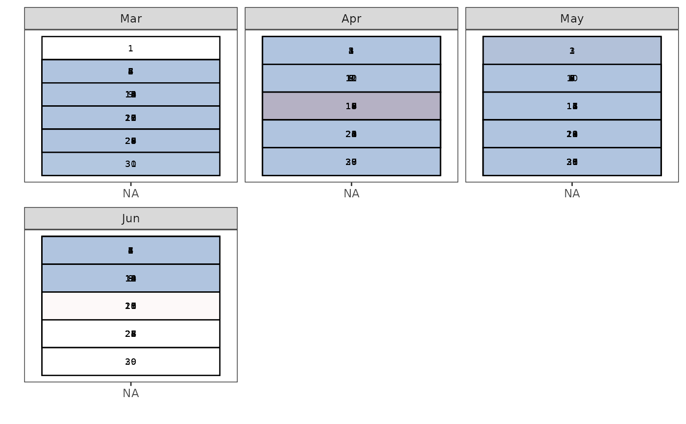

Desenha um calendário
folhinha.RdÚtil para visualizar cronogramas de aulas
Usage
folhinha(
inicio,
fim = NULL,
semanas = 18,
diasem,
feriados = NULL,
lang = "pt",
size = 3,
coraula = "steelblue",
corfer = "antiquewhite1",
corfimde = "antiquewhite2",
corNA = "white"
)Arguments
- inicio
Data em formato YYYYMMDD (em caractere ou numeral) com o primeiro dia de aulas.
- fim
Data em formato YYYYMMDD (em caractere ou numeral) com o último dia do calendário.
- semanas
Número de semanas letivas. Por padrão são 18.
- diasem
Dias da semana das aulas, abreviados e em minúsculas.
- feriados
Vetor com uma lista de datas para marcar feriados e dias não letivos.
- lang
Idioma para os dias da semana, "pt" (padrão) para português ou "es" para castelhano.
- size
Tamanho da letra do dia no gráfico.
- coraula
Cor de fundo para os dias de aula.
- corfer
Cor de fundo para os feriados e dias não letivos.
- corfimde
Cor de fundo para os fins-de-semana.
- corNA
Cor de fundo para o período não letivo.
Examples
folhinha(inicio = 20250305, diasem = c("seg", "qua", "sex"))
folhinha(inicio = 20250311, fim = 20250725, diasem = c("ter", "qui"))
folhinha(inicio = 20250304, sem = 15,
feriados = c("20250418", "2025/05/01", "2025-06-19"),
diasem = c("mar", "jue"), lang = "es",
size = 2.5, coraula = "yellow", corfer = "tomato3", corfimde = "white")
